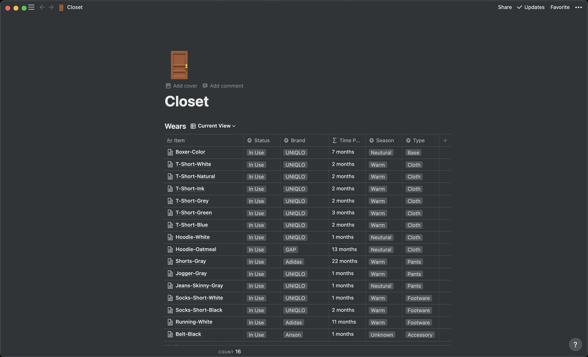

Capsule Wardrobe
Heard about the idea of capsule wardrobe when I started using Notion, going to draw down some thoughts there. As a quick note that, there are many tutorials/guides regarding capsule wardrobes on the web, simply search ‘capsule wardrobe’ or ‘capsule wardrobe notion/excel’, you should be able to find some informative ones.
What the closet looks like nowOn Notion I tried to categorize clothings in coloumns,
- Item: usually named as primary cateogry - secondary category - color
- Status: if I am using it right now, idle, or no longer in use
- Brand: brand of the cloth
- Time: keeps track of the condition of the cloth
- Season: when/what season to wear
- Type: useful for filtering through items
In Notion you are allowed to create a secondary page inside of an item, where you can expand more in detail:
- Name | Size | Color | Price: helps to find the tiem on the website again
- Laundry | Fabric: how I should take care of the product
- Notes: tried to use it to draw down thoughts about the cloth, how much I enjoyed wearing it, helps me make a better decision if I ever have to purchases similar items again
You can also filter, group and sort items similar to an excel spreadsheet :).